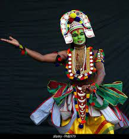

OTTAMTHULLAL

Like most Indian performing art forms, Ottamthullal has its principles influenced by the Natya Shastra (c. 2nd century BCE). The word Thullal means "to jump" or "leap about" in the Malayalam language.[1] Legend has it that Nambiar, the poet, fell asleep while playing the mizhavu drum for a Chakyar Koothu performance, inviting ridicule from the chakyar. In response, Nambiar developed Ottamthullal, which raised prevalent sociopolitical questions and made a satire of human pedigrees and prejudices. The chakyar complained about Nambiar's production to the king of Chembakassery. The king banned performances of Ottamthullal from the Ambalapuzha temple complex. Closely related art forms are Seethankan thullal and Parayan thullal. Mathur Panikkar popularized Ottamthullal for modern audiences. Ottamthullal competitions are held[2] and the art form may be used to spread a social message.[3]